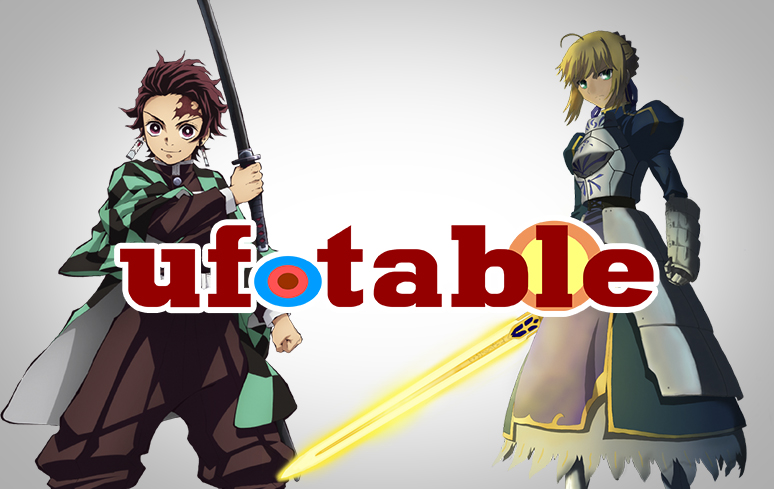

10 Melhores Eestúdios de Animes
Com a crescente popularidade do anime nos últimos anos, a questão de quais estúdios de animação são os melhores tem pairado na mente de alguns fãs. Tem sido comum que os fãs decidam o que assistir a cada nova temporada seguindo determinados estúdios cujos trabalhos já curtiram anteriormente. Embora este não seja necessariamente um indicador infalível de qualidade, já que muitas vezes diferentes equipes de animadores e diretores trabalham na mesma empresa, certos estúdios têm se mostrado um nível acima dos demais em termos do anime que produzem.
É claro que, ao discutir a qualidade da arte produzida por diferentes estúdios de anime, é importante separar os elogios aos próprios programas e às condições de trabalho nessas empresas. Só porque um estúdio faz algumas séries incríveis não significa que suas condições de trabalho não sejam deploráveis e classificá-los no topo desta lista não tolera de forma alguma esse comportamento. É lamentável que a indústria do anime esteja num ponto em que essa isenção de responsabilidade é necessária, mas esperançosamente, o maior escrutínio em torno dos encargos que estes estúdios colocam recentemente nos seus animadores levará a mudanças no futuro. Com tudo isso dito, aqui estão os 10 melhores estúdios de anime em termos da mídia que produzem.
10° A-1 Pictures
>
A-1 Pictures é um dos estúdios de anime mais prolíficos desta lista, tendo feito muitas séries icônicas desde sua criação em 2005. Isso incluiu programas cheios de ação como Sword Art Online e 86, bem como produtos mais realistas como Your Lie em abril e Kaguya-Sama: Love is War. No entanto, apesar de todos estes sucessos, também produziram uma boa parte de conteúdo que foi menos bem recebido. É por isso que eles acabam no final deste ranking, apesar de quantas séries excelentes eles fizeram, uma lista que só vai crescer com projetos como Fate Strange/fake e Solo Leveling no horizonte.
9° Production I.G
Production IG é um dos estúdios mais antigos desta lista, existindo desde a década de 1980. Eles não lançaram tantos programas quanto algumas das outras empresas desta lista, mas muitos dos que produziram, como Haikyu!! e Psycho-Pass têm sido incrivelmente bons. Dito isto, como acontece com a A-1 Pictures, eles tiveram seu quinhão de fracassos como Fena: Pirate Princess e Noblesse. No entanto, recentemente eles também foram responsáveis por um dos melhores shows do ano, Heavenly Delusion, e também estão animando o próximo anime Kaiju No. 8, que parece impressionante com base nos trailers lançados até agora.
8° David Production

David Production é um dos estúdios mais obscuros desta lista, mas com base em seus trabalhos mais icônicos eles ainda merecem um lugar. Eles são o estúdio por trás de Jojo’s Bizarre Adventure e Fire Force. Através das 6 partes de Jojo’s Bizarre Adventure atualmente animadas, sua evolução como estúdio é clara, com as temporadas mais recentes apresentando animações incrivelmente suaves. Nesta temporada eles estão lançando Undead Unluck, que até agora provou ainda mais suas proezas em animação.
7° Wit Studio
O Wit Studio ganhou destaque pela primeira vez através de seu trabalho nas três primeiras temporadas de Attack on Titan, que mostrou que eles poderiam criar ótimas cenas de ação de maneira estilizada. Eles seguiram esse sucesso com Vinland Saga, que foi um excelente show feito em estilo semelhante. Seu próximo grande anime, Ranking of Kings, tinha um estilo completamente diferente, mas ainda assim maravilhosamente animado, mostrando que o estúdio tem uma grande versatilidade. A única razão pela qual eles não estão no topo desta lista é sua produção relativamente baixa e sua tendência de não terminar os shows, já que eles entregaram Attack on Titan e Vinland Saga para outro estúdio antes de terminarem.
6° Madhouse

Madhouse é um estúdio muito menos ativo do que antes, caso contrário, teria uma classificação mais elevada nesta lista. Mas tendo produzido programas lendários como a versão de Hunter x Hunter de 2011 e a incrível primeira temporada de One-Punch Man, ele definitivamente merece estar aqui. A primeira temporada de One-Punch Man foi especialmente impressionante, com uma animação tão boa que ainda hoje se fala. Embora a produção de Madhouse tenha desacelerado um pouco nos últimos anos, ele ainda lança novos programas ocasionalmente, com seu mais novo programa Frieren: Beyond Journey’s End sendo potencialmente o melhor anime do ano, combinando uma meditação sincera sobre a vida com uma animação impressionante.
5° MAPPA
MAPPA é um dos estúdios mais novos desta lista, pelo menos em termos de quando ganhou destaque. O estúdio assumiu muitos projetos de alto nível, como Jujutsu Kaisen e Chainsaw Man, e também assumiu a tarefa nada invejável de assumir a produção de Attack on Titan e Vinland Saga depois que Wit parou de produzi-los. Programas como Chainsaw Man exibem o estilo cinematográfico e maravilhosamente detalhado do MAPPA, o que o tornou considerado um dos melhores estúdios dos últimos anos. Mas erros de alto perfil, como a temporada final de Attack on Titan, diminuem um pouco sua posição nesta lista.
4° Kyoto Animation

Muitos dos estúdios desta lista conquistaram essa parada com base nos méritos de seus conjuntos de ação, mas o mesmo não pode ser dito da Kyoto Animation. O estúdio geralmente é especializado em fazer animes fofos e saudáveis, como K-On! e Nichijou. Claro, isso não significa que eles não possam criar uma cena de luta épica, como mostraram partes de Dragon Maid da senhorita Kobayashi. O estúdio também se interessou pelo cinema, fazendo um dos melhores e mais emocionantes filmes de 2010, A Silent Voice. Tudo isso faz da Kyoto Animation um titã da indústria, apesar de seu foco em programas de nicho.
TOP 3 ESTÚDIOS DE ANIMES
3° Bones
Bones provou ser um dos estúdios de anime mais versáteis desta lista, produzindo shows nos mais diversos estilos. Isso pode incluir a arte mais padrão de My Hero Academia até o estilo mais experimental de Mob Psycho 100. Não importa o estilo de arte de seu anime, os espectadores ainda podem ter certeza de que verão grandes feitos de animação em algum momento, fazendo alguns de seus espetáculos visuais de anime. E, claro, com o anime mais bem avaliado de todos os tempos no MyAnimeList Fullmetal Alchemist: Brotherhood, a qualidade da arte que a empresa produz é indiscutível.
2° Ufotable

Ao contrário de alguns outros estúdios desta lista, o Ufotable não se envolve em vários estilos nem lança uma quantidade prolífica de anime. Mas os programas lançados, como Fate/Zero e Demon Slayer, foram alguns dos melhores programas de animação de todos os tempos. Grande parte disso se deve à combinação inovadora de animação 2D e 3D do Ufotable, muitas vezes de maneiras que os fãs casuais podem nem perceber. Mas o que todo espectador pode notar é a incrível qualidade de animação que isso produz, o que tem levado os programas e filmes da Ufotable a apresentar algumas das melhores lutas do meio e facilmente conquistando este estúdio um lugar de destaque nesta lista.
1° Studio Ghibli

O Studio Ghibli é especializado principalmente em filmes, ao contrário de muitos outros estúdios desta lista, o que pode ter dificultado a comparação entre eles em circunstâncias normais. No entanto, os filmes do Studio Ghibli são tão impactantes e icônicos que estão essencialmente em uma categoria à parte, inspirando até mesmo estúdios de cinema de faroeste como a Pixar. Quase tudo o que eles fizeram é uma obra de arte emocional diferente de tudo no meio. Princesa Mononoke, Spirited Away, Howl’s Moving Castle, My Neighbour Totoro e muitos outros são filmes obrigatórios para qualquer fã de anime. Essas obras-primas fazem facilmente do Studio Ghibli o melhor estúdio de anime de todos os tempos.